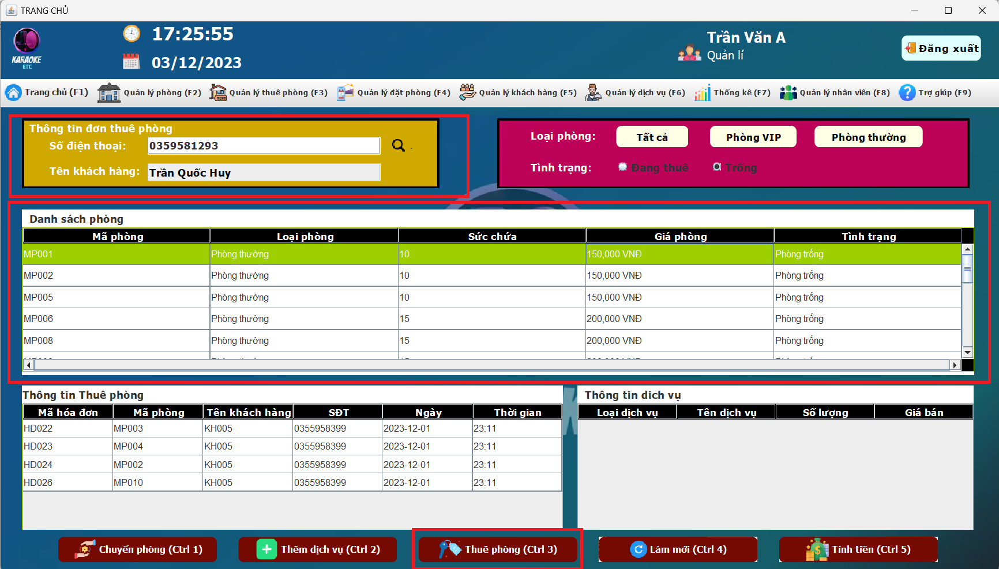
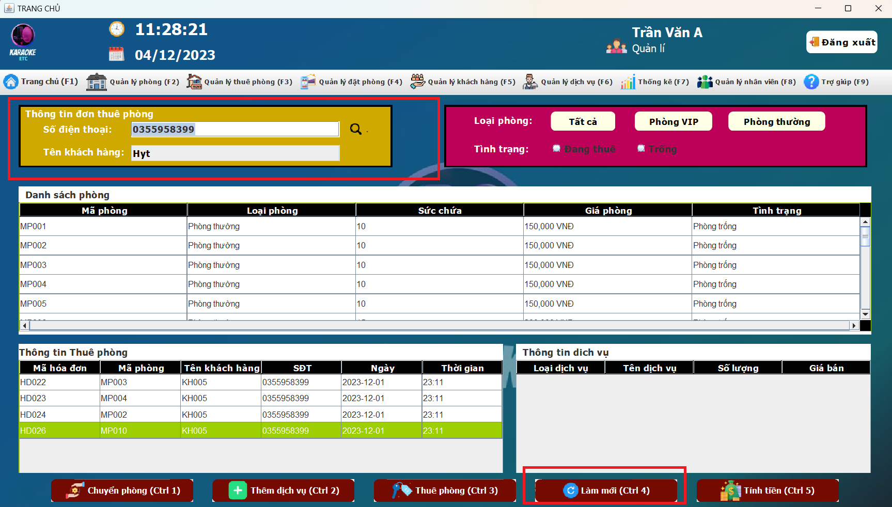
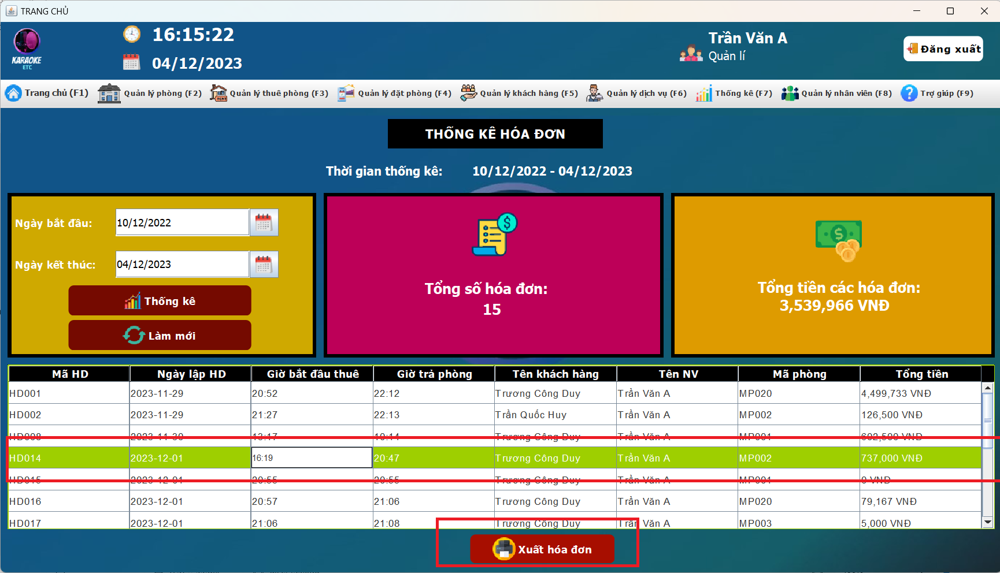
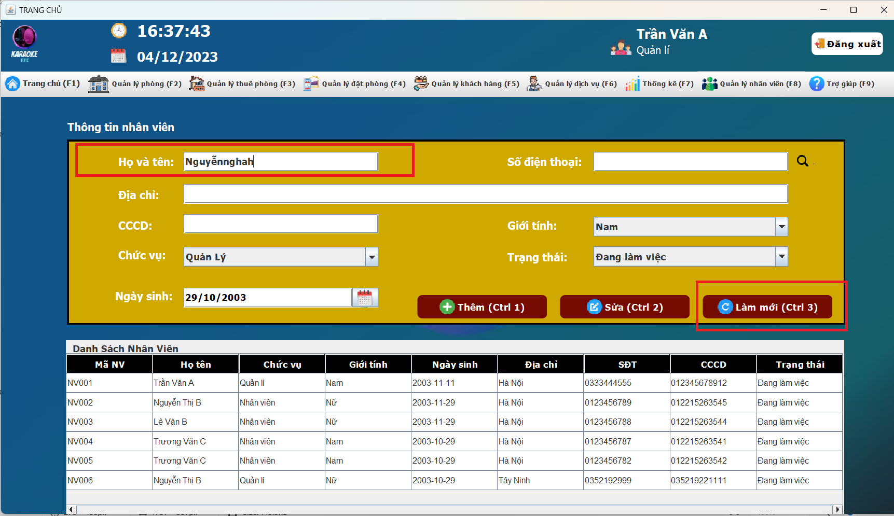

HƯỚNG DẪN SỬ DỤNG ỨNG DỤNG - KARAOKE ETC
1. Màn hình đăng nhập
- Chức năng đăng nhập vào hệ thống quản lý Karaoke ETC
Bước 1. Đăng nhập vào hệ thống
Bước 2. Chọn chức năng đăng nhập, hoặc quên mật khẩu ( Nếu bạn quên mật khẩu )
2. Màn hình quên mật khẩu
- Chức năng quên mật khẩu của hệ thống quản lý Karaoke ETC
Bước 1. Nhập vào gmail của tài khoản đã quên mật khẩu sau đó ấn nút "Gửi" để lấy mã OTP gửi về
Bước 2. Tiến hành nhập mã OTP đã được gửi về Gmail sau đó ấn nút "Gửi" để tiếp tục
Bước 3. Tiến hành đổi lại mật khẩu và ấn "Xác nhận" để hoàn tất quá trình lấy lại mật khẩu
3. Màn hình trang chủ
- Trang chủ của hệ thống quản lý KARAOKE ETC
3.1 Có thể xem ngày, giờ hiện tại ở góc trái giao diện
3.2 Có thể xem thông tin nhân viên, đăng xuất ra khỏi hệ thống ở góc phải giao diện
3.2 Xem thông tin cá nhân của nhân viên
3.2.1 Có thể đổi mật khẩu khi cần
4. Màn hình quản lý phòng
- Chức năng quản lý phòng của hệ thống quản lý KARAOKE ETC gồm: tìm kiếm phòng theo mã, thêm, sửa, làm mới,
lọc
phòng theo loại

4.1 Tìm kiếm phòng theo mã phòng:
Bước 1 Nhập mã phòng cần tìm vào ô đã được khoanh màu đỏ
Bước 2 Sau đó ấn icon
Search
bên cạnh để tìm kiếm phòng


4.2 Thêm phòng mới
Bước 1 Nhập thông tin vào các trường đã được khoanh màu đỏ
Bước 2 Sau đó ấn nút "Xác nhận" để tiến hành thêm
phòng
mới
4.2 Sửa phòng:
Bước 1 Chọn phòng cần sửa
Bước 2 Sau đó ấn vào nút "Sửa" để chỉnh sửa lại các trường đã được khoanh
màu
đỏ
Bước 3 Sau khi sửa xong ấn
nút "Xác nhận" để hoàn tất quá trình chỉnh sửa phòng.

Phòng đã được sửa thành công

4.3 Làm mới
Bước 1 Ấn nút "Làm mới" để làm mới lại tất cả các trường đường khoanh màu đỏ
Kết quả sau khi làm mới thành công
4.4 Lọc theo loại loại phòng
Bước 1 Ấn nút "Phòng VIP" để lọc theo loại loại phòng VIP
Bước 2 Ấn nút "Phòng thường" để lọc theo loại phòng thường

5. Màn hình thuê phòng
- Chức năng thuê phòng hệ thống quản lý Karaoke ETC
Bước 1 Nhập SĐT của khách hàng cần thuê
Bước 2 Sau đó ấn Icon "Search" để tìm kiếm xem khách hàng có tồn tại
trong hệ thống hay chưa

Bước 3 Nếu khách hàng chưa có trên hệ thống, sẽ tiến hành thêm mới khách hàng
Nhập đầy đủ thông tin khách hàng, ấn nút "Xác nhận" để thêm mới khách hàng"
Bước 3.1 Nếu khách hàng đã tồn tại trên hệ thống thì tiến hành luôn thuê phòng
Bước 4 Chọn phòng "Trống" cần thuê sau đó ấn nút "Thuê phòng" để thuê

Bước 4.1 Có thể lọc theo tình trạng, theo loại để dễ dàng tìm kiếm phòng để thuê
Lọc theo tình trạng phòng "Trống"
Lọc theo tình trạng phòng "Đang thuê", loại phòng "VIP"
Lọc theo tình trạng phòng "Trống", loại phòng "Thường"
Bước 5 Sau khi phòng được thuê thành công, có thể ấn nút "Thêm dịch vụ" để thêm dịch vụ vào phòng
Bước 6 Chọn dịch vụ, số lượng cần thêm. Sau đó ấn "Thêm dịch vụ" để thêm
Bước 6.1 Ngoài ra còn có thể Sửa lại dịch vụ đã thêm, hoặc là hủy dịch vụ vừa thêm vào
Bước 6.2 Nhấn nút "Xác nhận" để hoàn tất quá trình thêm dịch vụ cho phòng thuê
Bước 7 Nhấn nút "Chuyển phòng" để chuyển sang phòng VIP hoặc phòng khác khi có yêu cầu
Bước 8 Chọn phòng cần chuyển ấn nút "Xác nhận" để chuyển
Phòng đã được chuyển thành công
Bước 9 Chọn phòng cần tính tiền sau đó, ấn nút "Tính tiền" để tính tiền phòng
Bước 10 Ấn "Xác nhận" để tính tiền phòng
Bước 11 Ấn "Yes" để in hóa đơn nếu cần
Có thể xem lại khách hàng đã thuê bao nhiêu phòng qua SĐT, có thể thanh toán nếu cần
Bước 12 Nếu nhập nhầm SĐT, có thể ấn nút "Làm mới" để tiến hành nhập lại

6. Màn hình đặt phòng
- Chức năng đặt phòng hệ thống quản lý Karaoke ETC
Bước 1 Nhập SĐT của khách hàng cần thuê
Bước 2 Sau đó ấn Icon "Search" để tìm kiếm xem khách hàng có tồn tại
trong hệ thống hay chưa
Nếu khách hàng chưa tồn tại thì tiến hành thêm khách hàng mới như "Quản lý thuê phòng"
Bước 3 Nếu khách hàng đã có thì tiến hành chọn ngày đặt, giờ đặt
Bước 4 Chọn phòng cần đặt
Bước 5 Ấn nút "Đặt phòng" để đặt phòng
Bước 6 Sau khi đặt phòng thành công, khi khách hàng đến thì phải nhập lại SĐT để kiểm tra rồi mới cho
nhận phòng
Có thể "Hủy phòng" và "Nhận phòng" theo 2 cách sau
Cách 1
Cách 2
Bước 7 Chỉ có thể nhận phòng trước thời gian đặt 10 phút
Nhận phòng thành công
Bước 8 Khi nhập sai SĐT, có thể ấn nút "Làm mới" để nhập lại
Bước 9 Có thể lọc theo tình trạng, loại phòng để dễ dàng đặt phòng
7. Màn hình quản lý khách hàng
- Chức năng quản lý khách hàng hệ thống quản lý Karaoke ETC: thêm, sửa, làm mới, tìm kiếm khách hàng
theo SĐT
Bước 1 Ấn nút "Thêm" để mở chức năng thêm
Bước 2 Nhập hết các thông tin của khách hàng mới cần thêm

Bước 3 Ấn nút "Xác nhận" để tiến hành thêm khách hàng mới
Bước 4 Chọn khách hàng cần sửa thông tin, ấn nút "Sửa"
Bước 5 Sửa lại thông tin khách hàng, ấn nút "Xác nhận" để sửa
Bước 6 Nếu nhập sai thông tin ấn nút "Làm mới" để nhập lại
Làm mới thành công

Có thể tìm kiếm khách hàng theo SĐT
Bước 7 Nhập SĐT khách hàng cần tìm, ấn Icon "Search" để tìm kiếm
Tìm kiếm khách hàng thành công
8. Màn hình quản lý dịch vụ
- Chức năng quản lý dịch vụ hệ thống quản lý Karaoke ETC: thêm, sửa, làm mới, tìm kiếm khách hàng
theo loại dịch vụ, tên dịch vụ
Bước 1 Ấn nút "Thêm" để mở chức năng thêm dịch vụ
Bước 2 Nhập hết các thông tin của dịch vụ mói cần thêm, ấn nút "Xác nhận" để thêm
Bước 3 Chọn dịch vụ cần sửa, ấn nút "sửa" để mở chức năng sửa
Bước 4 Nhập thông tin cần sửa, ấn nút "Xác nhận" để sửa dịch vụ
Bước 5 Nếu nhập sai thông tin dịch vụ, ấn nút "Làm mới" để nhập lại
Bước 6 Chọn loại dịch vụ cần tìm, ấn Icon "Search" để tìm kiếm
Bước 7 Chọn tên dịch vụ cần tìm, ấn Icon "Search" để tìm kiếm
9. Màn hình thống kê
- Chức năng thống kê hệ thống quản lý Karaoke ETC: thống kê phòng, khách hàng, dịch vụ, hóa đơn
- Thống kê phòng
Bước 1 Chọn ngày bắt đầu, ngày kết thúc cần thống kê phòng
Bước 2 Ấn nút "Thống kê" để thống kê
Thống kê tổng số phòng, giờ cao cao điểm của hệ thống Karaoke ETC
Bước 3 Ấn nút "Làm mới" để reset lại kết quả thống kê

- Thống kê khách hàng
Bước 1 Chọn ngày bắt đầu, ngày kết thúc cần thống kê khách hàng
Bước 2 Ấn nút "Thống kê" để thống kê
Thống kê tổng số khách hàng, tổng số tiền của khách hàng
Bước 3 Ấn nút "Làm mới" để reset lại kết quả thống kê

- Thống kê dịch vụ
Bước 1 Chọn ngày bắt đầu, ngày kết thúc cần thống kê dịch vụ
Bước 2 Ấn nút "Thống kê" để thống kê
Thống kê dịch vụ được đặt nhiều nhất, số lần đặt dịch vụ, tổng doanh thu của dịch vụ
Bước 3 Ấn nút "Làm mới" để reset lại kết quả thống kê
- Thống kê hóa đơn
Bước 1 Chọn ngày bắt đầu, ngày kết thúc cần thống kê hóa đơn
Bước 2 Ấn nút "Thống kê" để thống kê
Thống kê tổng số hóa đơn, tổng tiền các hóa đơn
Bước 3 Ấn nút "Làm mới" để reset lại kết quả thống kê
Bước 4 Chọn hóa đơn cần xuất lại
Bước 5 Ấn nút "Xuất hóa đơn" để xuất lại

10. Màn hình quản lý nhân viên
- Chức năng quản lý nhân viên hệ thống quản lý Karaoke ETC: thêm, sửa, làm mới, tìm kiếm nhân viên theo
SĐT
Bước 1 Ấn nút "Thêm" để mở chức năng thêm
Bước 2 Nhập hết các thông tin của nhân viên mới cần thêm

Bước 3 Ấn nút "Xác nhận" để tiến hành thêm nhân viên mới
Bước 4 Ấn nút "Sửa", sau đó chọn nhân viên cần sửa thông tin
Bước 5 Sửa lại thông tin nhân viên, ấn nút "Xác nhận" để sửa
Bước 6 Nếu nhập sai thông tin ấn nút "Làm mới" để nhập lại

Có thể tìm kiếm nhân viên theo SĐT
Bước 7 Nhập SĐT khách hàng cần tìm, ấn Icon "Search" để tìm kiếm
Kết quả tìm kiếm
Chúc bạn có một trải nghiệm tuyệt vời với App quản lý Karaoke ETC
--HẾT--